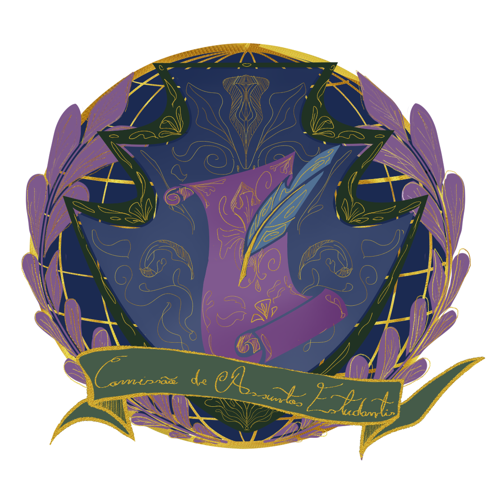
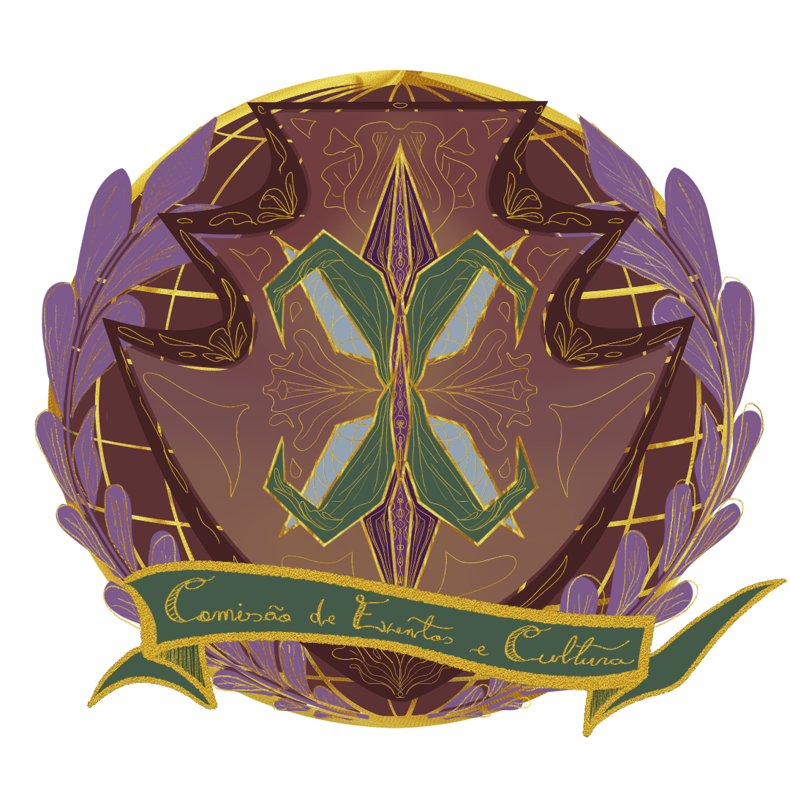

Comissão de Assuntos Estudantis
"Para ser ouvido você precisa falar"

Comissão de Eventos e Cultura
"Não é só sobre fazer festa, é sobre trazer cultura e enriquecer mentes"

"Para ser ouvido você precisa falar"
"Não é só sobre fazer festa, é sobre trazer cultura e enriquecer mentes"